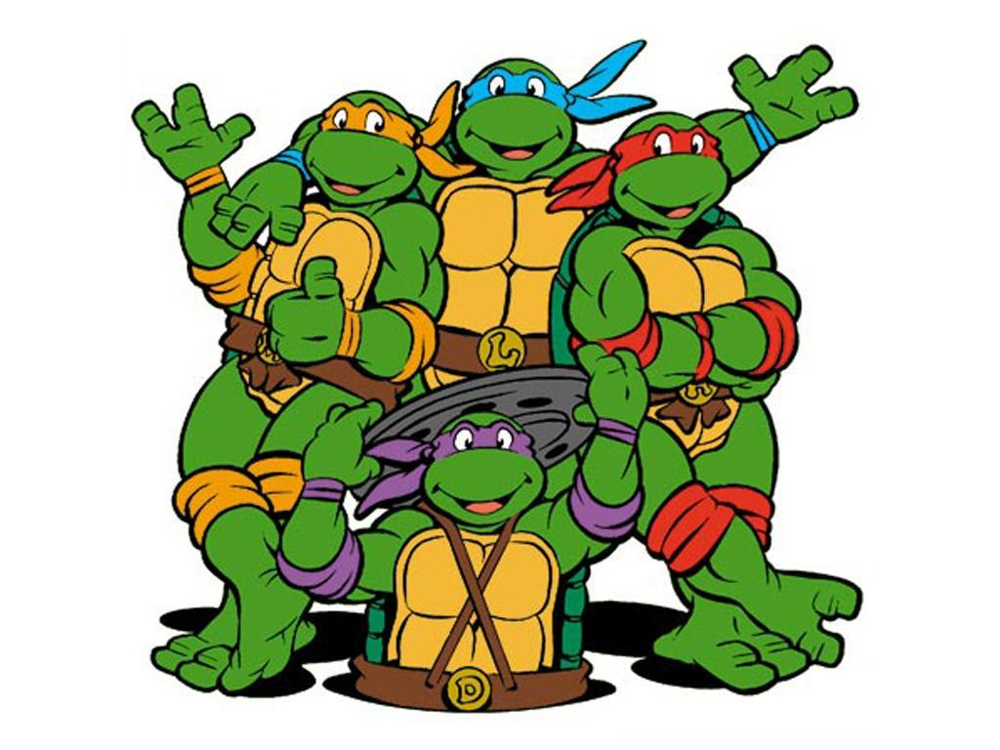
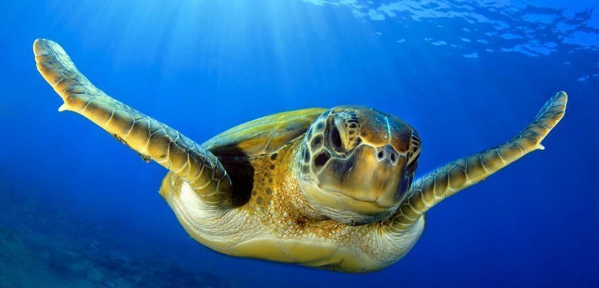
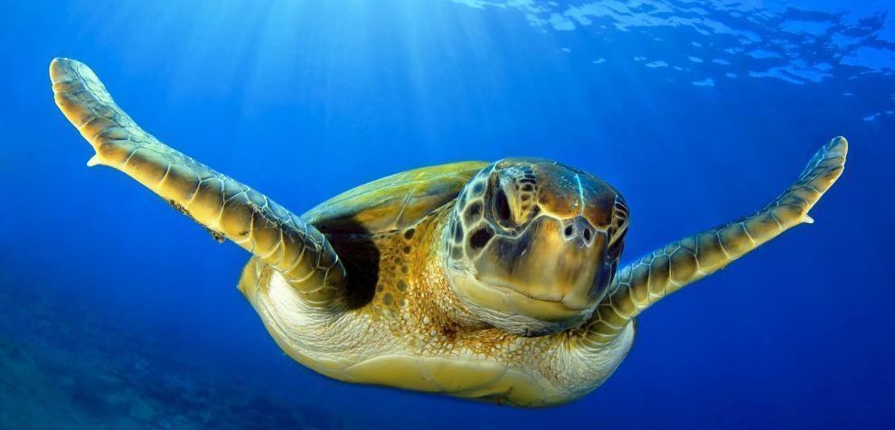

Turtles are an endagered species who need our help. With many illegal tradings, current climate change and a polluted habitat, the turtles are struggling to survive! Our mission is to protect the turtles and their habitats with the support of our staff and volunteers worldwide.
Our Story
Hi readers! We are the Turtle Heroes. The organisation started as a group of friends who have a passion for saving turtles which has now developed into a international charity foundation dedicated to saving Turtles over the ocean. Our staff and volunteers from all over the world have worked fantastically to save the turtles, promote turtle awarenesss and provide educational workshops teach the marine environment and saving stranded turtles. We have many opportunities for you to join us or donate money to the foundation. We hope you enjoy our new website, and please leave us a message! We would love to hear from you.
And the turtles, of course... all the turtles are free - As turtles and, maybe, all creatures should be– Dr Seuss

Green Sea Turtle

Sea Turtle
Green Sea Turtle

Loggerhead Sea Turtle
Who are the heroes?
Not the Ninja Turtles!
Meet our Team
Amina Lunat
Director of Turtle Conservation
Amina and her team are currently designing and executing high-impact strategies for Turtle protection, including community-based conservation approaches; eliminating urgent threats such as the illegal wildlife trade by applying new technologies and reducing demand for illegal wildlife products.
Avanti Gajoram
Director of Education
Avanti is passionate about working with the community, espeically working with young children who are as enthusiastic as she is. She has devoted much of her career to exploring innovative ways to raise awareness such as hosting school trips where they can join the action in saving turtles.
Zahraa Shaikh
President
Zahraa Shaikh has been leading the organisation since its establishment in 2015. Her inspiration came from a volunteering experience in Barbados as a student where she noticed the insufficient support provided to turtles as well as the limited knowledge from the public on what actions to take when coming across an injured turtle.
Where are we now?
Our team is currently in the small village of Tortuguero (translated as "Region of Turtles") which lies on the northeastern Carribean Coast of Costa Rica in South America. We have partnered with Tortuguero National Park and Costa Rican government to run projects with aims of protecting the many species of turtles that are close to extinction.
Visit our partnerships website to find out more information about the village and the projects we are running to protect the turtles
Visit our partner: Tortuguro National ParkWith the rise of animals in danger, we can work together to speak for those without a voice
Take Action
Join us in spreading our message about protecting Turtles and the marine environment. You can either volunteer for us, adopt a turtle or donate to the charity. Your involvement in any shape or form will help us in saving the endagered turtles and their homes.
 
